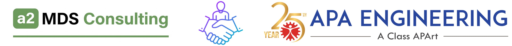

<!-- footer.html -->
<!-- 💡 모바일 반응형 대응 및 최적화가 완료된 공통 푸터 컴포넌트 -->
<div class="footer-container">
    <!-- 왼쪽 텍스트 영역: 가독성을 위해 폰트 크기를 키웠습니다 -->
    <div class="footer-left">
        <div>상호명: <strong>에이투엠디에스컨설팅</strong></div>
        <div>사업자등록번호: <strong>412-09-29348</strong></div>
        <div>Copyright &copy; 2026 a2MDS Consulting.</div>
        <div>All Rights Reserved.</div>
    </div>

    <!-- 오른쪽 이미지 및 파워드바이 영역 -->
    <div class="footer-right">
        <div class="footer-logos">
            
        </div>
        <!-- 파워드바이 문구: 폰트 크기를 키웠습니다 -->
        <div class="footer-powered">
            a2MDS, powered by <strong>APA Engineering</strong>
        </div>
    </div>
</div>

<!-- 💡 푸터 전용 미디어 쿼리 스타일 주입 (텍스트 크기 상향 세팅) -->
<style>
    /* 데스크톱 표준 규격 (텍스트 시각적 균형 맞춤 상향) */
    .footer-container {
        display: flex; 
        justify-content: space-between; 
        align-items: center; 
        max-width: 1200px; 
        margin: 0 auto; 
        padding: 1.5rem 1rem 2.5rem 1rem; /* 상하 여백 밸런스 조정 */
        box-sizing: border-box;
    }
    .footer-left {
        font-size: 15px; /* 💡 기존 13.5px -> 15px로 더 선명하게 확대 */
        color: #4b5563; 
        line-height: 1.8; 
        flex: 1;
    }
    .footer-right {
        display: flex; 
        flex-direction: column; 
        align-items: flex-end; 
        gap: 0.6rem; 
        max-width: 45%; 
        flex-shrink: 0; 
        margin-left: 20px;
    }
    .footer-logos {
        display: flex; 
        justify-content: flex-end; 
        width: 100%;
    }
    .responsive-footer-logo {
        width: 100%; 
        height: auto; 
        display: block;
        object-fit: contain;
    }
    .footer-powered {
        font-size: 14px; /* 💡 기존 12px -> 14px로 가독성 상향 확대 */
        color: #4b5563; 
        white-space: nowrap;
    }

    /* 🛠️ 모바일 환경 최적화 교정 (max-width: 768px) */
    @media (max-width: 768px) {
        .footer-container {
            flex-direction: column !important;
            align-items: flex-start !important;
            gap: 1.5rem !important;
            padding: 1.5rem 1rem 2rem 1rem !important;
        }
        .footer-left {
            width: 100% !important;
            text-align: left !important;
            font-size: 14px !important; /* 💡 모바일 환경에서도 글씨 크기 확대 */
        }
        .footer-right {
            display: flex !important;
            flex-direction: column !important;
            align-items: flex-end !important; /* 모바일에서도 요구하신 오른쪽 정렬 반영 */
            max-width: 100% !important;
            width: 100% !important;
            margin-left: 0 !important;
            text-align: right !important;     
        }
        .footer-logos {
            justify-content: flex-end !important; 
            width: 100% !important;
        }
        .responsive-footer-logo {
            width: 100% !important;
            max-width: 280px !important;
            height: auto !important;
        }
        .footer-powered {
            white-space: nowrap !important;
            font-size: 13px !important; /* 💡 모바일 환경에서도 글씨 크기 확대 */
            color: #4b5563 !important;
        }
    }
</style>
